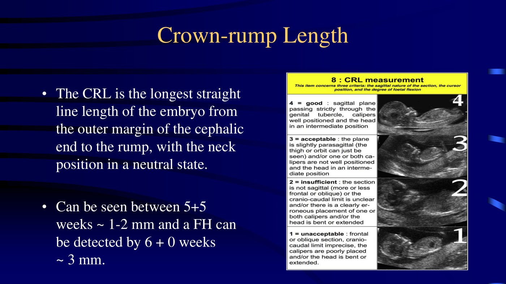
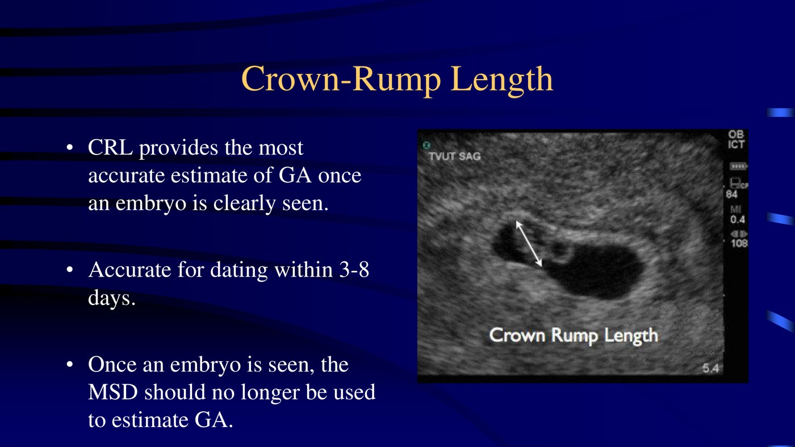
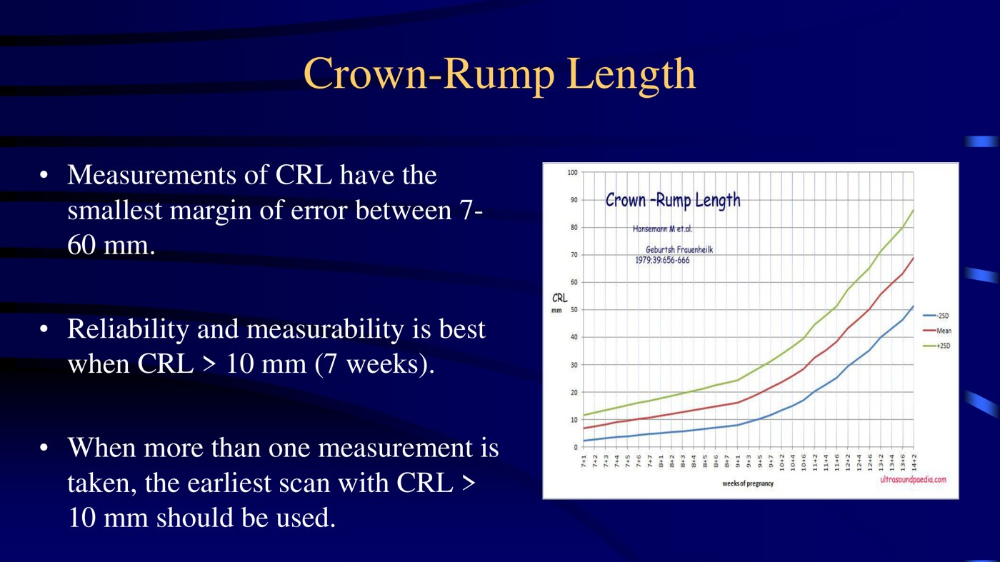
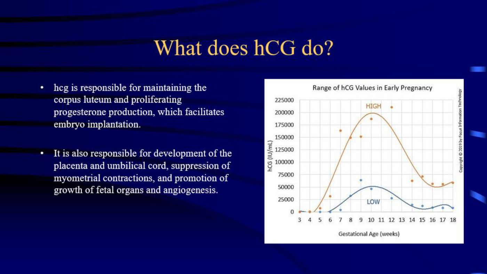
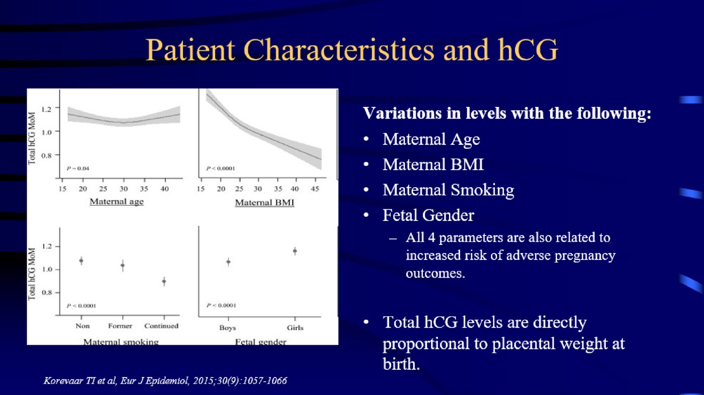

Approach to First Trimester Bleeding & Ultrasound
- This lecture changes a number you already learned. The discriminatory zone should be raised from 1500 to 2000–3000 in stable patients with a pregnancy of unknown location — see the box below, and compare 4.9.
- Ultrasound beats dates. One correctly performed first-trimester scan is more accurate than menstrual history and is the best method for estimating a delivery date. Offer it to every woman, ideally 7–12 weeks.
- The sequence on screen: gestational sac by ~32 days → yolk sac 5–5+5 weeks → CRL 5+5 weeks → fetal heart 6+0 weeks.
- Once you can see an embryo, stop using the sac. CRL replaces mean sac diameter, and is most reliable above 10 mm (7 weeks).
- A "normal" rising β-hCG does not exclude an ectopic. The lower limit of a viable rise is 53% over 2 days, not 66% — and ectopics can rise normally too.
- β-hCG does not predict rupture. There is no level that tells you a tube is about to go.
Learning Objectives
- Identify the timing of visibility and diagnosis of a normal pregnancy on ultrasound.
- Assist in assigning gestational age based on ultrasound.
- Describe a normal curve of β-hCG levels for a single intrauterine pregnancy.
- Describe the discriminatory zone as it relates to pregnancy of unknown location (PUL) and ectopic pregnancy.
- Describe the rate of decline of β-hCG in failing pregnancies.
Dr. Angelos Vilos, Department of Obstetrics and Gynecology — Assistant Professor, Fellowship Program Director in Reproductive Endocrinology and Infertility, and Medical Director of the Early Pregnancy Assessment Unit. Two recorded parts (9 and 13 min).
Dating by Ultrasound
What appears when, and which measurement to trust at each stage.
When to Scan, and Why Not to Trust Dates
| Indications for first-trimester ultrasound |
|---|
| To date a pregnancy — ideally between 7 and 12 weeks |
| Threatened abortion — to document fetal viability |
| Incomplete abortion — to identify retained products of conception |
| Suspected multiple gestation — to determine chorionicity and amnionicity reliably |
| Work-up for suspected ectopic, molar pregnancy or pelvic mass, including clinical signs of bleeding or pain |
| Prior to pregnancy termination |
Quality criteria: transvaginal assessment of uterus and adnexa; may include transabdominal evaluation for free fluid or a mass high in the pelvis; performed by providers meeting minimum training and certification standards, with adequate equipment and oversight.
Dating from the last menstrual period assumes all of the following: a regular 28-day cycle, ovulation at the midpoint, fertilisation on the middle day, correct recall of the LMP, and being off oral contraceptives for several months beforehand.
Even when recall is perfect, ovulation, fertilisation and implantation cannot be certain without assisted reproduction. Why: waves of follicular development occur in normal cycles, sperm survive 5–7 days in the reproductive tract, and the ovulation-to-implantation interval can vary by as much as 11 days.
The payoff is concrete: first- and second-trimester ultrasound dating has reduced inductions for post-term pregnancy.
Gestational Sac and Mean Sac Diameter
| When present | During the first 3–5 menstrual weeks |
| What it is | The chorionic cavity; its echogenic rim is implanting chorionic villi and associated decidual tissue |
| Smallest visible | 2–3 mm on a high-frequency transvaginal transducer — about 32–33 days |
| Growth | Approximately 1 mm per day |
| How to measure | Mean of three orthogonal "inner to inner" diameters. Place the cursor on the sac, not the surrounding echogenic region |
| Accuracy | ±4–11 days. Rough rule: GA ≈ 30 days + MSD in mm |
| When it stops being reliable | >14 mm, or once an embryo can be identified. It also has greater inter-observer variability than CRL |
Yolk Sac, Then Crown–Rump Length
 The yolk sac is the confirmation step. First structure inside the gestational sac, and proof of an intrauterine pregnancy. Can be seen when MSD reaches 5–6 mm (~5 weeks); should be seen when MSD reaches 8 mm (~5+5 weeks). Peaks at 6 mm by 10 weeks, then disappears. Not used for dating.
The yolk sac is the confirmation step. First structure inside the gestational sac, and proof of an intrauterine pregnancy. Can be seen when MSD reaches 5–6 mm (~5 weeks); should be seen when MSD reaches 8 mm (~5+5 weeks). Peaks at 6 mm by 10 weeks, then disappears. Not used for dating.

How to measure it, and how it goes wrong. The longest straight line from the outer margin of the cephalic end to the rump, neck neutral. The reference chart grades planes from good down to unacceptable — the failures are an oblique section, poorly placed callipers, and a head that is bent or extended rather than neutral.
The handover rule. Once an embryo is clearly seen, CRL is the most accurate estimate of gestational age — accurate to 3–8 days — and the mean sac diameter should no longer be used.
Smallest margin of error between 7 and 60 mm. Best above 10 mm (~7 weeks) — and when several scans exist, use the earliest one with a CRL over 10 mm. Earlier is more accurate, because biological variation in size accumulates with gestation.| Structure | When it appears | Size |
|---|---|---|
| Gestational sac | ~32 days | 2–3 mm |
| Yolk sac | 5 to 5+5 weeks | MSD 5–6 mm (can) → 8 mm (should) |
| Crown–rump length | 5+5 weeks | 1–2 mm |
| Fetal heart rate | 6+0 weeks | CRL ~3 mm |
Original studies found transvaginal superior for estimating gestational age. More recent studies find transabdominal non-inferior, provided a CRL is used and it is measured after 6 weeks. The explanation is simply better transabdominal technology today.
And at the far end of the first trimester: CRL and biparietal diameter have equivalent accuracy between 12 and 14 weeks. CRL stays reliable to 84 mm (14 weeks), after which BPD takes over.
β-hCG
Where the numbers come from, and why the old thresholds were wrong.
What β-hCG Is and Does
![Slide titled What is hCG describing it as a pregnancy hormone secreted by the placental syncytiotrophoblast cell layer, becoming positive as implantation begins at 21 to 22 days post LMP or 8 days post ovulation, with levels increasing exponentially in very early pregnancy before plateauing in the late first trimester and declining to a steady state, beside a table of hCG levels by weeks since last menstrual period from 3 weeks at 5 to 50 milli-international units per millilitre up to 9 to 12 weeks at 25,700 to 288,000 and non-pregnant at 5 to 200.](../../../../assets/images/week-5/first-trimester-ultrasound/hcg-by-week.jpg) Secreted by the syncytiotrophoblast. Turns positive as implantation begins — 21–22 days post LMP, or 8 days post ovulation. The table is worth a glance for scale: from 5–50 mIU/mL at 3 weeks to a peak in the hundreds of thousands by 9–12 weeks.
Secreted by the syncytiotrophoblast. Turns positive as implantation begins — 21–22 days post LMP, or 8 days post ovulation. The table is worth a glance for scale: from 5–50 mIU/mL at 3 weeks to a peak in the hundreds of thousands by 9–12 weeks.

Four jobs, and the shape of the curve. Maintains the corpus luteum and its progesterone (which enables implantation), builds placenta and umbilical cord, suppresses myometrial contractions, and promotes fetal organ growth and angiogenesis. Note the enormous spread between the high and low curves at any given week — that spread is the reason a single value means so little.How Fast Should It Rise?
| Teaching | Study | What it actually showed |
|---|---|---|
| Historical | — | Doubling every 2 days. Deviation was taken to mean an abnormally developing fetus, threatened miscarriage or ectopic |
| 1990 | Cohort, n = 20 | Viable IUP needed a rise of at least 66% in 2 days — the lower limit of the 85% CI, meaning 8% of viable pregnancies rose even slower |
| 2004 | Cohort, n = 287 | The rise can be as low as 53% over 2 days and still be viable — the 99% CI. Fewer than 1% are slower, and it can go as low as 35% over 2 days |

Four things shift the level: maternal age, BMI, smoking and fetal sex — and all four are also associated with adverse pregnancy outcomes. Total hCG is directly proportional to placental weight at birth, which is the mechanistic thread tying those together.Two studies make the point that a reassuring rise does not exclude an ectopic:
340 women presenting with pain or bleeding under 12 weeks and an inconclusive scan (PUL). 63 had a rise ≥66% over 2 days — i.e. "normal". Ten of those 63 (16%) turned out to have an ectopic.
200 women with diagnosed ectopic pregnancies. 60% had rising hCG at diagnosis, and 21% were rising above 53% over 2 days — a "normal" rate, in a known ectopic.
The Discriminatory Zone — Raised
Pregnancy of unknown location (PUL) is a positive hCG without ultrasound evidence of a pregnancy. It is increasingly common because pregnancies are diagnosed much earlier than they once were — and because the hCG levels of early viable IUP, non-viable IUP and ectopic overlap considerably.
4.9 teaches the discriminatory zone as 1500 transvaginal, from Dr. Sovran's handout and Dr. Kirby's session. Dr. Vilos's position is that this threshold should be raised.
The original levels of 1000–2000 mIU did not account for slow-rising or low-normal hCG in viable intrauterine pregnancies, and so produced inappropriate diagnoses of pregnancy failure or ectopic pregnancy.
Using 2000–3000 mIU instead keeps slower-growing normal pregnancies in the differential. The stated goal: fewer wrong diagnoses, and less unnecessary misoprostol, methotrexate, D&C and laparoscopy.
Both numbers are examinable depending on who is asking. 1500 is the classic teaching; 2000–3000 is this lecture's correction. Know that the disagreement exists and why.
![Slide titled Discriminatory Levels By the numbers in PUL. At hCG greater than or equal to 2000 the most likely diagnosis is non-viable intrauterine pregnancy, twice as likely as ectopic. At hCG 2000 to 3000 ectopic is 19 times more likely than a viable intrauterine pregnancy, a ratio of 38 non-viable to 19 ectopic to 1 viable, a 2 percent chance. At hCG greater than or equal to 3000 ectopic is 70 times more likely than viable, a ratio of 140 non-viable to 70 ectopic to 1 viable, a 0.5 percent chance.](../../../../assets/images/week-5/first-trimester-ultrasound/discriminatory-levels.jpg) Read the ratios, not just the multiples. Even at hCG ≥2000 with an empty uterus, the single most likely diagnosis is still a non-viable intrauterine pregnancy — twice as likely as ectopic. At 2000–3000 the chance of a viable IUP is 2%; above 3000 it is 0.5%.
Read the ratios, not just the multiples. Even at hCG ≥2000 with an empty uterus, the single most likely diagnosis is still a non-viable intrauterine pregnancy — twice as likely as ectopic. At 2000–3000 the chance of a viable IUP is 2%; above 3000 it is 0.5%.
| Stable patient, hCG 2000–3000, no clear evidence of ectopic → repeat hCG ± ultrasound in a few days. Why: | |
|---|---|
| 1 | It is more likely a non-viable IUP than an ectopic — roughly 2× |
| 2 | There is a 0.5–2% chance it is a viable IUP |
| 3 | If hCG continues past ~3000–3500 with no IUP, ectopic becomes more likely |
| 4 | If hCG falls 15–50% over 24 hours, it was likely a non-viable IUP |
| 5 | Risk of rupture across all PUL under close surveillance is as low as 0.03%, and in diagnosed ectopic as low as 1.7% |
There is no level at which you can say a tube is about to rupture, and no level at which you can say it will not. That is why the management question is about haemodynamic stability and symptoms, not about a number — and it is consistent with the Week 4 case where a falling hCG ended in rupture anyway (4.9).
The Rate of Decline in Failing Pregnancies
From 710 patients with non-viable intrauterine pregnancies managed without medical or surgical intervention. The decline is quadratic and depends on the absolute level — the higher the starting hCG, the faster it must fall.
| Starting hCG | Minimum expected decline over 48 hours |
|---|---|
| ≥ 5000 mIU/mL | 35% |
| 500 mIU/mL | 24% |
| 50 mIU/mL | 12% |
In a study of 200 diagnosed, untreated ectopic pregnancies with falling hCG, the decline matched the pattern of a spontaneous abortion in 8% of cases. So the rate of decline does not fully differentiate a resolving ectopic from a failing intrauterine pregnancy.
Two consequences. A pregnancy is only considered resolved once hCG falls below 5 IU/L. And if the decline does not follow the predictable curve, re-evaluate for incomplete abortion or a non-resolving ectopic. Despite declining levels, a resolving ectopic may still rupture.
Note the definitional point: a declining hCG without ultrasound evidence of an intrauterine pregnancy is a non-viable pregnancy by definition. The rate of decline in spontaneous abortion is 12–32% over 2 days, depending on the absolute value.
Conclusions
| All women should be offered a first-trimester dating ultrasound, ideally 7–12 weeks |
| Done correctly it is more reliable than LMP and reduces inductions for post-dates |
| Gestational sac by 32 days; MSD usable to 14 mm or until a CRL is available; accuracy 4–11 days |
| Yolk sac 5 to 5+5 weeks · CRL by 5+5 weeks · fetal heart by 6+0 weeks |
| Once a CRL is detected it replaces MSD; most reliable at ≥10 mm or 7 weeks; accuracy 3–8 days |
| CRL and BPD are equally accurate between 12 and 14 weeks |
| hCG begins to rise 21 days post LMP or 8 days post ovulation |
| Normal rise is ≥53% over 2 days (99% CI), or a doubling time of 1.4–2.1 days |
| Non-viable IUP and ectopic can rise at the same rate as a viable IUP |
| The discriminatory range should be raised from 1500 to 2000–3000 for stable PUL patients |
| Decline in spontaneous abortion is 12–32% over 2 days depending on the absolute value |
Built from Dr. Angelos Vilos's "Approach to First Trimester Bleeding / Ultrasound" module — two recorded parts (9 and 13 min) and its 36-slide deck, which cites SOGC Clinical Practice Guidelines 337, 375 and 303, ACOG Practice Bulletins 131 and 150, ACOG Committee Opinion 427, Doubilet NEJM 2013, Kadar Fertil Steril 1990, Barnhart Obstet Gynecol 2004, Horne Obstet Gynecol 2004, Silva Obstet Gynecol 2006 and Korevaar Eur J Epidemiol 2015. All figures are slides from that deck. Auto-captions rendered hCG variously as "ACG", "EKG", "BCG" and "OECD", Dr. Vilos as "Dr. Angelos Fellows", PUL as "pupil", CRL as "coral" and "sero", yolk sac as "jokes that", syncytiotrophoblast as "since tissue trough or blast", and the ranges "1000–2000" and "2000–3000" as "1002 thousand" and "2003 thousand" — so every figure here was taken from the slides. One discrepancy: the audio gives the rupture risk in surveilled PUL as 0.3%, the slide as 0.03%; the slide is used. The clinical management of ectopic and miscarriage is 4.9; the pathology is 5.11.